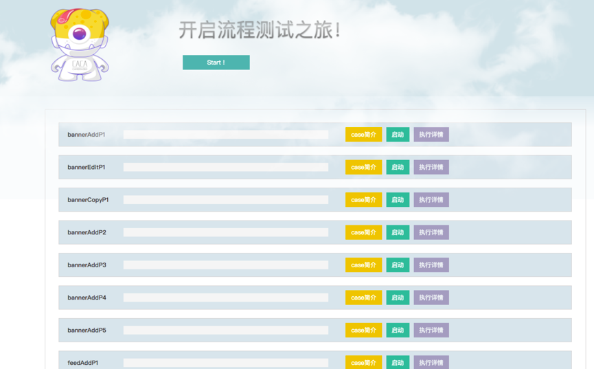

<div class="styleguide dispacther-page-useDoc">
	<div class="page group">
		<h2 class="sectionedit1" >流程化测试使用文档</h2>

	

        <h4 class="block">1 . 点击Getting Started, 进入如下页面：</h4>
        

        <h4 class="block">2. 点击start </h4>
		<div class="level3">
			<p style="margin-top:20px">所有case会按照，先后顺序串行执行，这个地方，有些case之间有强前后顺序的要求，所以串行会比较简单，这可能会比较耗时，但是比较执行结果比较可靠；</p>

			<p style="margin-top:15px">2.为什么不做单测</p>
			<p>首先新广告系统是在组件的基础上开发的，在TDD开发模式下，由开发人员编写单测是必要的，但是目前开发人员吃紧，每开发一个组件或者接口就要写单测，这样会增大开发人员开发量。并且新广告后台开发是基于组件，在组件级别做单测即可。</p>
			<p>在进行首次进行时可以直接全量case执行</p>


    	</div>

    	<h4 class="block">3. 每个case的子功能介绍</h4>
    	<div class="level3">
    		<strong>case简介</strong>
    		<p>
    			点击case简介会弹出这个case的具体测试流程点，和执行顺序，只有当其中所有的点都执行成功，该case才算成功；
    		</p>
    		<strong>启动</strong>
    		<p>
    			单个启动该case，在全部case执行之后，或者更为关心某个case的结果，可以单独执行该case，其中单独执行某些case需要强依赖之前的case执行，具有这种关系的case如下：
    		</p>
    		<p>bannerEditP1,BannerCopyP1 ,执行之前必须重新执行一遍BannerAddP1；bannerEditP1和BannerCopyP1没有执行顺序，可以并行；</p>
    		<p>同样的，所有编辑和拷贝的case需要在新增case重新执行完之后执行；</p>

    		<strong>执行详情</strong>
    		<p>
    			点击执行详情可以看到该条case执行的结果，执行详情页截图如下：
    		</p>
    		
    

    		<p style="margin:25px;">如上，该页面会展示，该case执行的断言数，全部断言执行成功才是成功，执行结果的截图会在该页展示，该case执行失败，可以看出是其中必选项的客户端版本没有选择，所以导致最后一步提交失败；执行详情也是希望帮助大家可以更快的锁定问题；</p>
    	</div>


</div>